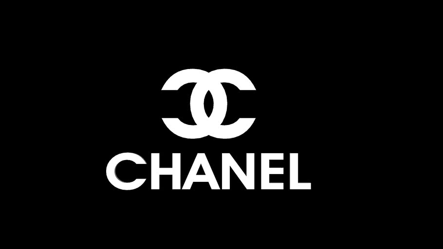

Nike
Nike produces a wide range of sports equipment.Their first products were track running shoes.

They currently also make shoes, jerseys, shorts, cleats, baselayers, etc. for a wide range of sports, including track and field, baseball, ice hockey, tennis, association football (soccer), lacrosse, basketball, and cricket. Nike Air Max is a line of shoes first released by Nike, Inc. in 1987. Additional product lines were introduced later, such as Air Huarache, which debuted in 1992. The most recent additions to their line are the Nike 6.0, Nike NYX, and Nike SB shoes, designed for skateboarding. Nike has recently introduced cricket shoes called Air Zoom Yorker, designed to be 30% lighter than their competitors'. In 2008, Nike introduced the Air Jordan XX3, a high-performance basketball shoe designed with the environment in mind.
Louis Vuitton
Louis Vuitton Malletier, commonly known as Louis Vuitton or shortened to LV, is a French fashion house and luxury goods company founded in 1854 by Louis Vuitton.

The label's LV monogram appears on most of its products, ranging from luxury trunks and leather goods to ready-to-wear, shoes, watches, jewelry, accessories, sunglasses and books. Louis Vuitton is one of the world's leading international fashion houses; it sells its products through standalone boutiques, lease departments in high-end department stores, and through the e-commerce section of its website
Louis Vuitton
Chanel is a French fashion house that focuses on women's high fashion and ready-to-wear clothes, luxury goods and accessories
The company is owned by Alain Wertheimer and Gérard Wertheimer, grandsons of Pierre Wertheimer, who was an early business partner of the couturière Coco Chanel. In her youth, Gabrielle Chanel gained the nickname "Coco" from her time as a chanteuse. As a fashion designer, Coco Chanel catered to women's taste for elegance in dress, with blouses, suits, trousers, dresses, and jewellery (gemstone and bijouterie) of simple design, that replaced the opulent, over-designed, and constrictive clothes and accessories of 19th-century fashion. The Chanel product brands have been personified by male and female fashion models, idols and actresses.